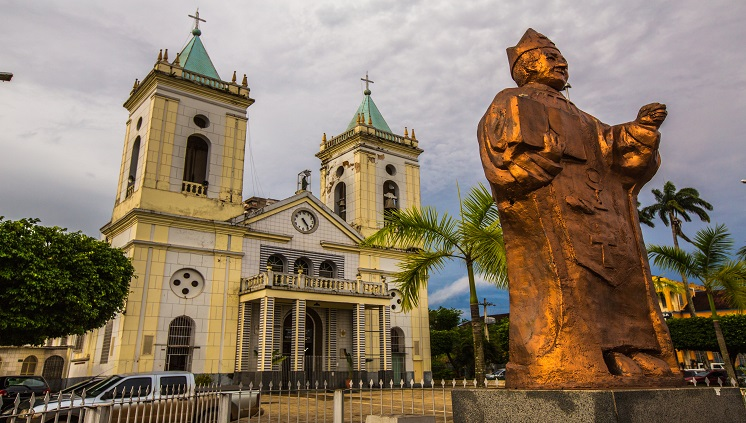

Explore a história, cultura e belezas naturais do estado
📜 História de Rondônia
Rondônia foi habitada por diversos povos indígenas antes da chegada dos europeus. A região ganhou importância com a construção da Estrada de Ferro Madeira-Mamoré e a exploração da borracha. Tornou-se estado em 1981, em homenagem ao Marechal Cândido Rondon.
🏞️ Turismo
Parque Nacional de Pacaás Novos
Real Forte Príncipe da Beira
Vale das Cachoeiras
Rio Madeira e Guaporé
Estrada de Ferro Madeira-Mamoré

👥 População
Rondônia possui cerca de 1.746.227 habitantes (2024), distribuídos em 52 municípios. A capital, Porto Velho, é a cidade mais populosa com mais de 500 mil habitantes.
🎭 Cultura
A cultura rondoniense é uma mistura de tradições indígenas, nordestinas, sulistas e estrangeiras. A culinária é diversa, com pratos como tacacá, peixe com açaí e polenta. O artesanato é rico em sementes amazônicas e biojoias.
🗺️ Mapa de Rondônia
🏙️ Cidades
Rondônia é composto por 52 municípios. As maiores cidades são Porto Velho, Ji-Paraná, Ariquemes, Vilhena e Cacoal.


/i.s3.glbimg.com/v1/AUTH_59edd422c0c84a879bd37670ae4f538a/internal_photos/bs/2021/f/f/6NkGBYS72DXik3xQBBig/porto-velho-leandro-morais-4-.jpg)